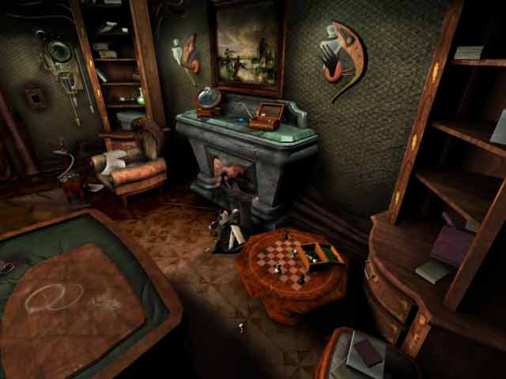
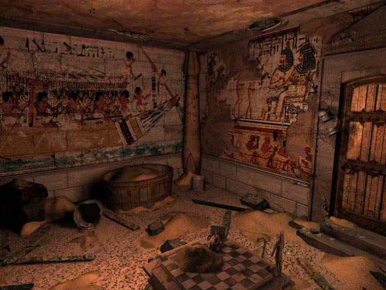
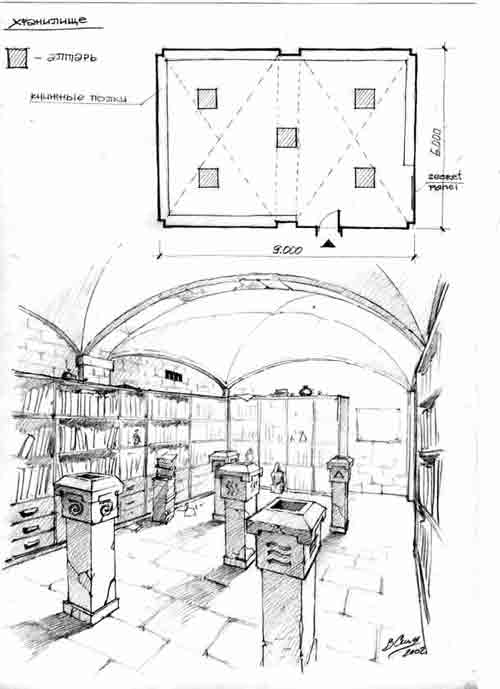
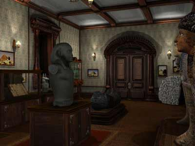
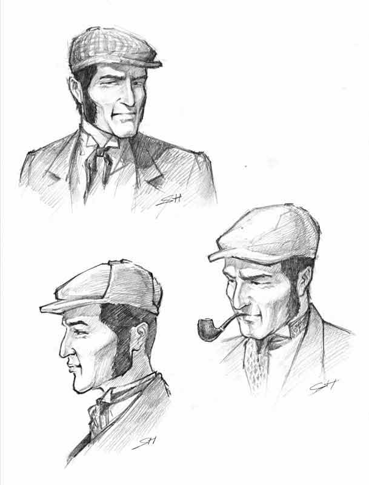

The Mystery of the Mummy
The images on this page all come from the original official site for the game, preserved on the Internet Archive. Check it out for more images and other charming old Internet pages promoting the game.
Frogwares' first Sherlock Holmes game was also their first game period, and came out in 2002. As the title would suggest, the game involves a mummy who periodically shows up while Holmes is solving a disappearance case at the mansion of Sir Montcalfe, an archeologist.
{kind=link}
To be frank, this game is not very good-- Frogwares quickly improved their craft after this first entry. That said, if you're interested in turn-of-the-millenium adventure games, Sherlock Holmes, or silly CGI mummy cutscenes, you may be interested in giving it a shot.
Mystery of the Mummy is free to download and play on Steam. It is one of those rare games that functions on Linux perfectly out of the box, but requires some tinkering on Windows: on Windows 10/11, you'll need to use DxWnd to make the cursor usable.
{kind=link}
The game is divided into several discrete chapters, each taking place in separate areas of the mansion. Each chapter will have you solving puzzles to uncover new clues about the mystery and to unlock the next area. The puzzles are fine: none of them stick out as being particularly difficult (once you know what the goal is) nor particularly breezy. The most difficult part of the game isn't the puzzles themselves, but the pixel hunting. Like some other Adventure Games around this time with detailed and realistic pre-rendered backgrounds, a lot of the items you are meant to interact with or pick up blend in with the world and can be hard to spot, and unlike later adventure games, there's no highlight key. There's no shame in pulling up the GameFAQs page when you suspect you're missing a hotspot.
{kind=link}
Unlike future Holmes games, the character cast is very limited. Holmes is usually working alone while solving the case, with other characters limited to the occasional Mummy appearance and a cutscene at the end of the . Also unlike future entries, the game is only played in the 1st person perspective, à la Myst (although unlike Myst, you are able to drag your mouse to look around from each standing spot). Both of these elements together make this game feel rather desolate and lonely, which adds to the atmosphere and makes the occasion where something exciting happens, usually between chapters, more effective. Still, the addition of NPCs and multiple locations in later games is definitely an improvement, and feels more Sherlockian.
{kind=link}
While there aren't any Mummy cases in the Holmes canon, searching the ACD Encyclopedia does reveal an episode of the 1950s TV show staring Ronald Howard and two plays (The Curse of the Mummy's Tomb and Der Tod des Bayernkönings). Regardless of previous cases, the topic of Ancient Egypt and mummies is fitting Holmes' setting. Napoleon's Egyptian expedition sparked a fascination with Ancient Egypt in continental Europe, and the transfer of many Egyptian artifacts to the British after Napoleon's defeat spread that interest to the UK. This "fad" lasted into 20th century, when it arguably reached it's zenith during the archeological expeditions of the 20s and 30s. The image of the rich English archeologist with a collection of ancient Egyptian artifacts is quintessentially Victorian.
Mummy was re-released on the Nintendo DS and on the Nintendo Wii. I have not played these versions myself, but it is hard to imagine they play as well as the PC version, and are better thought of as curiosities than as viable alternatives. They are part of a whole subgenre of PC adventure games getting rereleased on the these platforms, taking advantage of the stylus and Wiimote's capability to stand in for a computer mouse.
{kind=link}
Links
- IGN Review
- Adventure Gamers Review
- old-games.com reveiw (relatively positive!)
- GameFAQs page